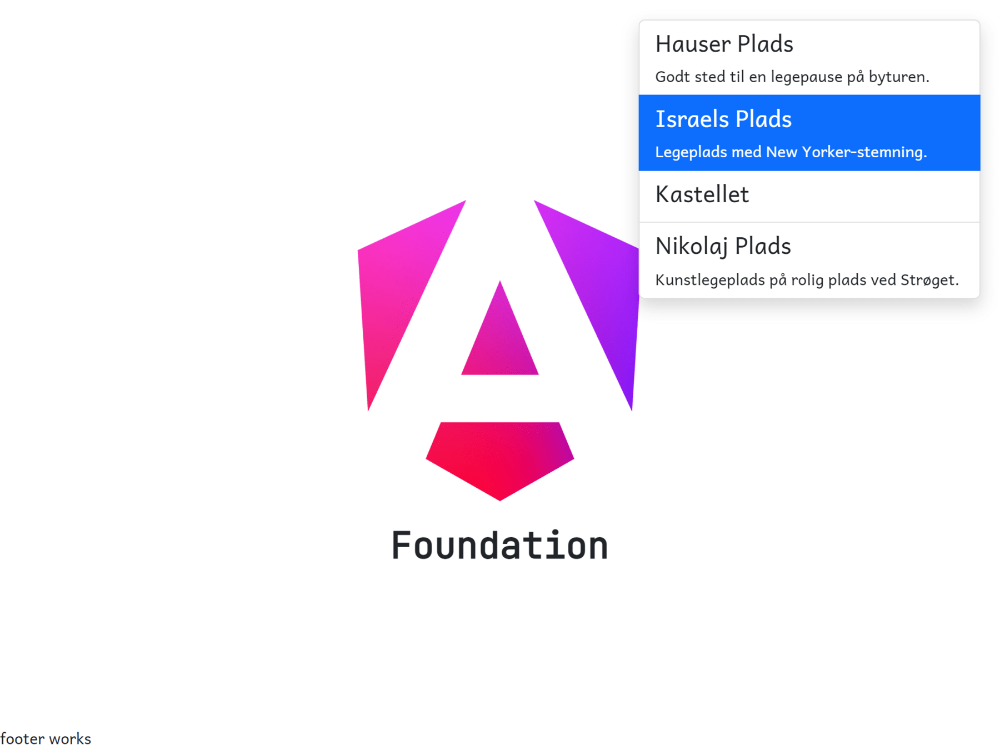

Using the Angular CLI, create a new component called footer: ng g c footer. Include this new component inside the app component template.
When you save the files, you can see that the footer component has been added to the view. You will need to scroll down
